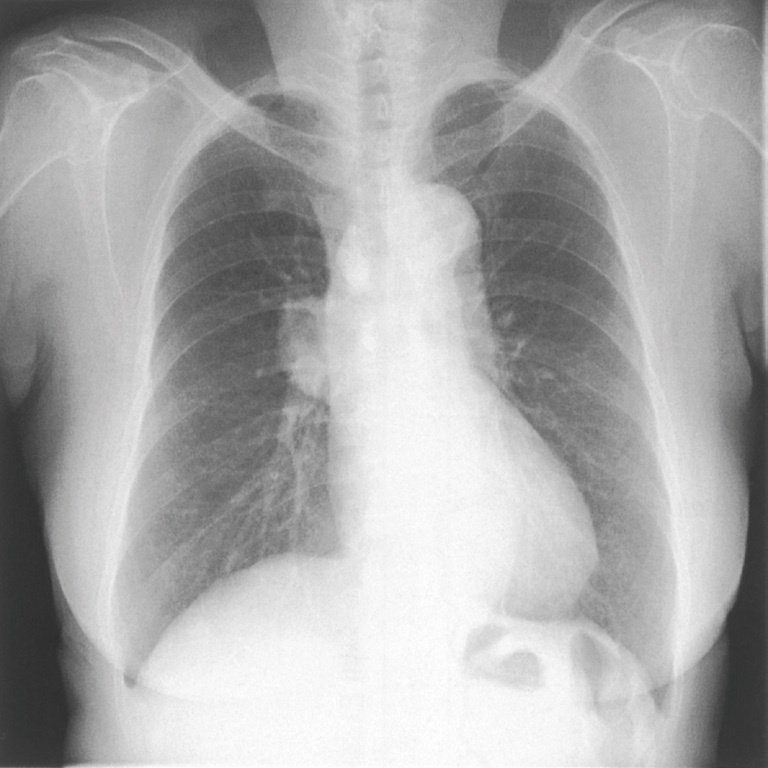
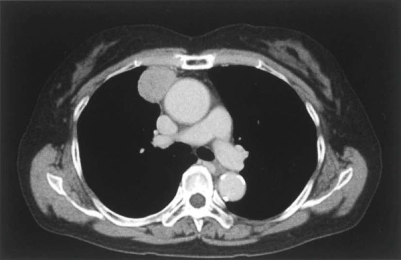
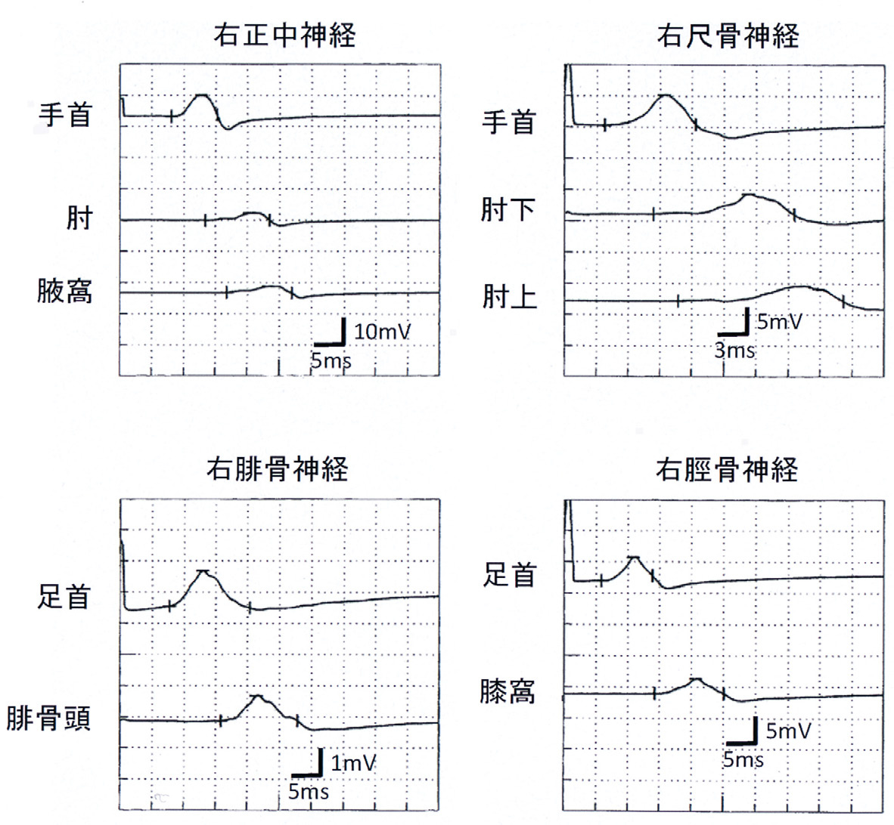
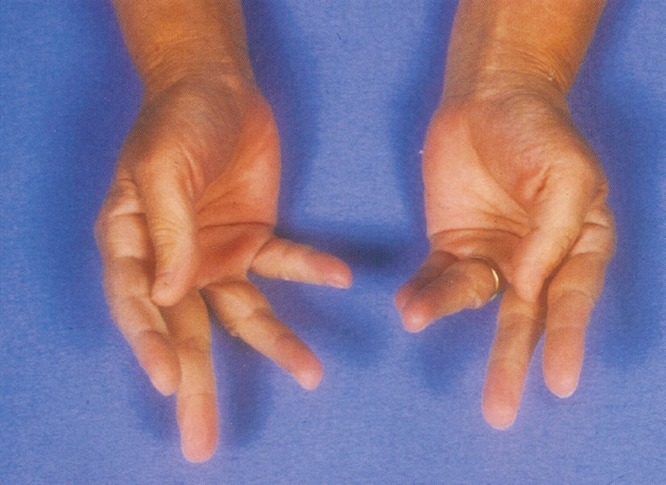
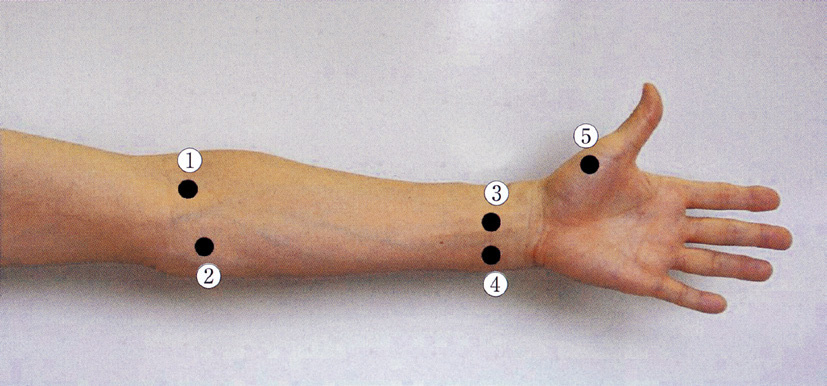
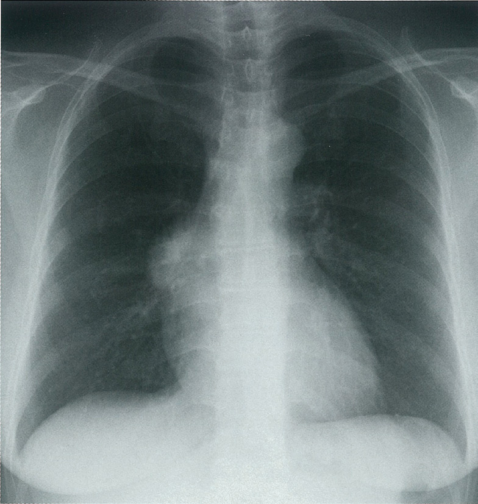
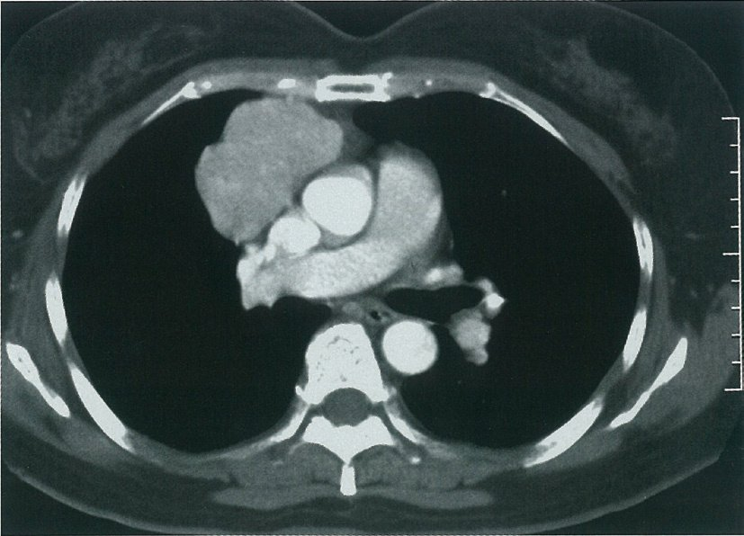
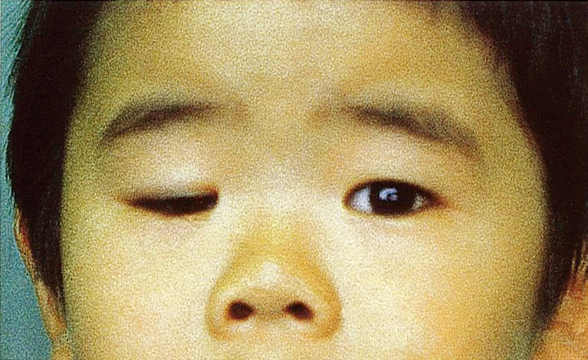

| 特徴 | 内容 |
| 易疲労性 | 夕方悪化・筋力低下が活動で悪化 |
| 眼瞼下垂・複視 | 眼筋症状が初発が多い（50%） |
| 嚥下障害 | 球症状（球型MG） |
| 胸腺腫合併 | 20〜40%→拡大胸腺摘出術 |
| 抗AChR抗体 | 約85%陽性 |
| 合併症 | 特徴 |
| 白内障 | 前後嚢下白内障（特徴的） |
| 耐糖能異常 | インスリン抵抗性 |
| 心伝導障害 | 突然死のリスク |
| 嚥下障害 | 球筋・嚥下筋障害 |
| 知能低下 | 先天型で顕著 |
| 疾患 | 発症時期 |
| Werdnig-Hoffmann病（SMA1型） | 出生直後〜乳児期 |
| 新生児一過性MG | 出生後（母体抗体） |
| Duchenne型筋ジストロフィー | 幼児期（3〜5歳）〜小学生前半 |
| 福山型先天性筋ジストロフィー | 出生時〜乳児期 |
| 先天性筋強直性ジストロフィー | 出生時（母体由来） |




| 疾患 | 治療 |
| MS | IFN-β・グラチラマー（再発予防）、ステロイドパルス（急性期） |
| NMOSD | ステロイドパルス（急性）＋アザチオプリン・リツキシマブ（再発予防） |
| MG | AChE阻害薬・ステロイド・IVIG・血漿交換・胸腺摘出 |
| GBS | ステロイド無効→PE・IVIG |
| CIDP | ステロイド・IVIG・血漿交換 |



| 合併症 | 機序 |
| 大腿骨頭壊死 | 血管障害・脂質沈着→骨頭虚血 |
| 結核の再燃 | 細胞性免疫抑制→潜在性結核の再活性化 |
| 骨粗鬆症 | カルシウム吸収低下・骨形成抑制 |
| 消化性潰瘍 | プロスタグランジン抑制 |
| 糖尿病 | インスリン抵抗性増加 |
| 白内障・緑内障 | 眼圧上昇・水晶体変性 |
| ネフローゼ症候群 | ✕（ステロイドの合併症ではない） |
| 疾患 | 遺伝形式 |
| 顔面肩甲上腕型（FSHD） | 常染色体優性 |
| 先天性福山型（FCMD） | 常染色体劣性 |
| Becker型（BMD） | X染色体連鎖潜性 |
| 筋強直性ジストロフィー（DM1） | 常染色体優性 |
| 肢帯型（LGMD） | 常染色体優性または劣性 |
| 検査 | 所見・意義 |
| 誘発筋電図（反復刺激） | waning（漸減）3Hz低頻度刺激で>10%低下 |
| 抗AChR抗体 | 約85%陽性（特異性高い） |
| テンシロンテスト | 症状の一時的改善（2〜5分） |
| 四肢単純MRI | 不要 |
| 筋生検 | 通常不要 |
